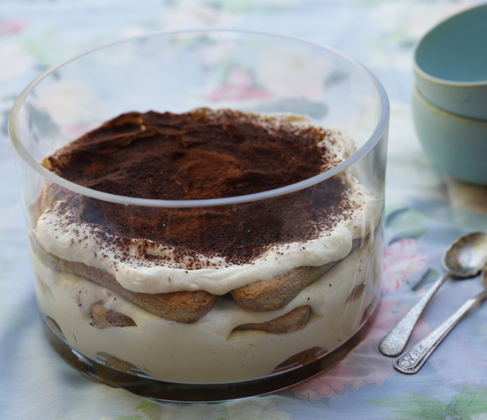

Tiramisu
Far from being the traditional Italian dessert you assume it is, tiramisu is actually a fairly recent invention. It seems it first appeared in a recipe book as late as 1981, and was created in the 1950s at the earliest. Like most recipe origin stories, sources disagree over who should take the credit, but most agree it originated in the northern town of Treviso. You can read about it in this article in The Guardian, How to make the perfect Tiramisu and this one from the Washington Post, The trail of tiramisu
All I want to say is that if made well, a trifle of sponge fingers, coffee, liqueur, a light yet rich creamy filling and chocolate is a glorious thing, and I love it! My recipe tries to balance richness and lightness with the addition of a couple whipped egg whites in the cream layer. I also advocate not soaking the sponge fingers until they are soggy and giving several hours in the fridge for the flavours to combine and the texture to be just right – fluffy, not gluggy; creamy rather than stodgy; and with just the right sparkle from the coffee.
Ingredients:
- 16-24 savoiardi (depending on size)
- 1 double shot espresso mixed with 80 ml hot water
- 2 tablespoons marsala, frangelico or brandy
- 250 g mascarpone
- 300 ml pure cream
- 1/4 cup caster sugar
- 1 teaspoon vanilla extract
- 2 egg whites
- 1 teaspoon best quality dutch-process cocoa
In a clean bowl whisk the egg whites until they form soft peaks. Set aside and in another medium sized bowl beat the mascarpone, cream, sugar and vanilla until the mixture creates soft peaks. Carefully fold the egg whites into the cream mixture, so as not to knock air out of the egg whites. Mix the coffee with the liqueur and place in a shallow dish. Dip the savoiardi on both sides quickly in the coffee and liqueur and make a layer in the bottom of a a glass serving bowl (approx. 20 cm diameter). Cover with 1/3 of the cream mixture, and repeat twice more, finishing with a cream layer. Dust the top with the cocoa, cover and place in the refrigerator for several hours.